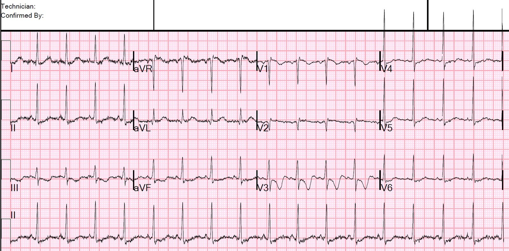
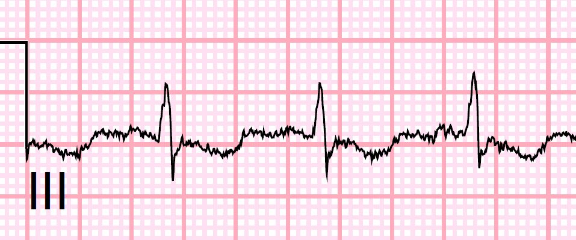
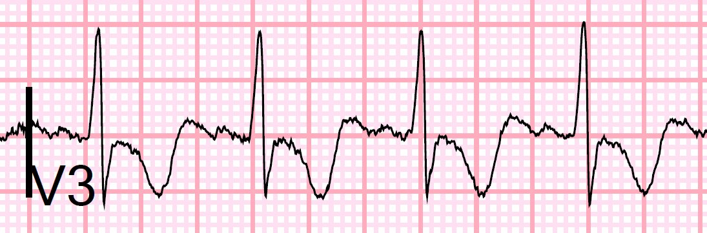
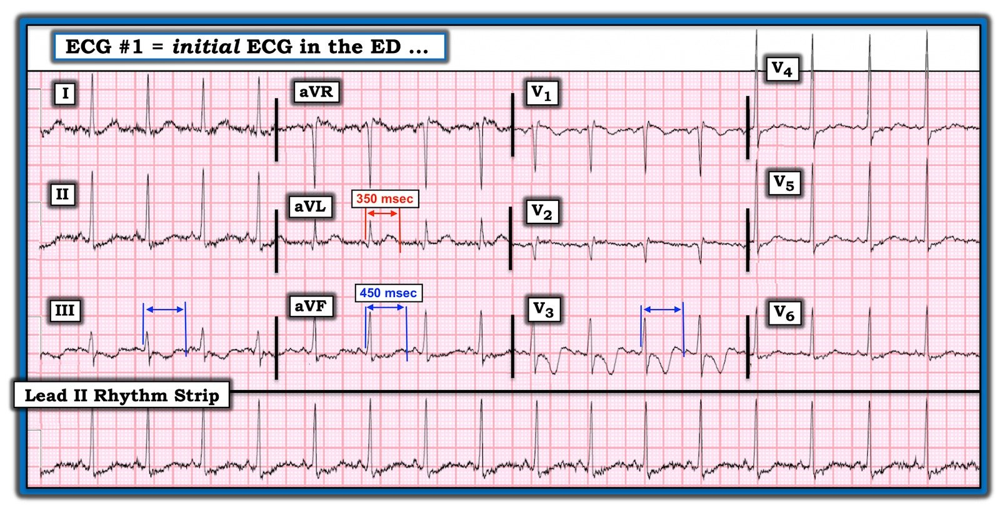

03/05/2020 — Một phụ nữ trẻ bị nôn
Bản dịch tiếng Việt của bài "A young woman with vomiting" – Dr. Smith’s ECG Blog. Giữ nguyên toàn bộ 6 hình ảnh của bản gốc.
Một bệnh nhân 20 mấy tuổi đến khám vì nôn.
Một điện tâm đồ được ghi:


Điện tâm đồ trước đây bình thường.
QT do máy tính đo là 353 ms, và QTc theo Hodges là 411 ms
Chuyện gì đang xảy ra?
Có sóng T dạng xuống-lên (down-up), trong đó khoảng QT (bị máy tính đo sai) quá dài.
Tôi đo được 460 ms ở chuyển đạo V3, với QTc theo Hodges là 532 ms.
Ngoài ra còn có ST chênh xuống lan tỏa không đặc hiệu.
Sóng T dạng xuống-lên nên khiến bạn nghĩ tới một trong hai điều:
1) soi gương (reciprocal) của sóng T dạng lên-xuống (up-down)
a) sóng dạng lên-xuống ở các chuyển đạo V7-V9 của nhồi máu cơ tim thành sau đã tái tưới máu thường biểu hiện bằng sóng T dạng xuống-lên ở V2 và V3
b) ở chuyển đạo III, soi gương với aVL
c) ở chuyển đạo aVL, soi gương với III
2) Hạ kali máu, trong đó thành phần đi lên thực chất là sóng U. Trong những trường hợp này, QT biểu kiến rất dài, và thực chất là khoảng QU.
Chẩn đoán phân biệt ST chênh xuống khi QRS bình thường (tức là không có LVH, LBBB, RVH, RBBB, WPW, v.v.) gồm:
1) không bệnh lý
2) thiếu máu cục bộ
3) do digoxin
4) hạ kali máu
Dưới đây là chuyển đạo III và V3 được phóng to:




Nguyên nhân ở đây là hạ kali máu. K là 2,3 mEq/L.

===================================
BÌNH LUẬN CỦA TÔI, bởi KEN GRAUER, MD (3/5/2020):
===================================
Một ca thú vị do Dr. Smith trình bày — đặc biệt dưới góc độ tổng hợp lâm sàng. Bệnh nhân là một phụ nữ 20 mấy tuổi, đến khám vì nôn, với điện tâm đồ mà tôi đã đánh dấu và in lại trong Hình 1.
- Tôi đi đến cùng kết luận với Dr. Smith — dù con đường để tới đó của tôi hơi khác một chút.
CÂU HỎI về điện tâm đồ #1: Dr. Smith đã đưa ra kết luận cho ca này — đó là bệnh nhân bị hạ kali máu (tức là K+ = 2,3 mEq/L) nặng. Nhưng trước khi đi đến kết luận này:
- Diễn giải có hệ thống của bạn về điện tâm đồ 12 chuyển đạo trong Hình 1 là gì? Lý do cần diễn giải một cách có hệ thống — là vì có nhiều dấu hiệu điện tâm đồ quan trọng mà nếu không thì quá dễ bị bỏ sót. BẠN nhận ra được BAO NHIÊU dấu hiệu trong số đó?
- GỢI Ý: Mỗi khi bạn thấy các đường kẻ màu, mũi tên và con số — chúng hầu như luôn góp phần vào câu trả lời. VÌ SAO tôi lại đánh dấu điện tâm đồ #1 như bạn thấy trong Hình 1?


TRẢ LỜI về điện tâm đồ #1: Tôi đã nhiều lần nhấn mạnh tầm quan trọng của việc thường quy áp dụng một Cách tiếp cận hệ thống khi đọc điện tâm đồ (Xem Bình luận của tôi trong bài ngày 28 tháng Sáu năm 2019 trên Dr. Smith’s ECG Blog). Không làm như vậy chắc chắn sẽ dẫn tới bỏ sót những dấu hiệu điện tâm đồ có thể quan trọng. Tôi diễn giải điện tâm đồ trong Hình 1 như sau:
Phân tích mô tả điện tâm đồ #1:
- Có nhiễu đường nền đáng kể. Hãy nhớ rằng phần diễn giải điện tâm đồ của bạn cho bệnh nhân là một phần của hồ sơ bệnh án. Vì vậy tôi cho rằng việc ghi nhận (trong phần đọc kết quả/trên hồ sơ bệnh án) khi nhiễu đáng kể có thể làm giảm độ chính xác của phần diễn giải là cần thiết. Do tầm quan trọng của việc đo chính xác khoảng QT trong ca này — việc ghi nhận có nhiễu trên điện tâm đồ #1 là cần thiết!
- Nhịp trên điện tâm đồ #1 là nhịp xoang với tần số ~100/phút (về mặt kỹ thuật là “nhịp nhanh” xoang).
- Các khoảng: Khoảng PR bình thường (tức là không quá 0,20 giây). Phức bộ QRS bình thường (tức là không quá 0,10 giây). Khoảng QT kéo dài (XEM chi tiết bên dưới).
- Trục mặt phẳng trán bình thường (khoảng +45 độ).
- Không có lớn buồng tim.
Về Thay đổi Q–R–S–T:
- Có sóng q vách nhỏ ở chuyển đạo aVL. Mặc dù có sóng r khởi đầu nhỏ ở chuyển đạo V1 — sóng r khởi đầu này lại mất ở chuyển đạo V2 — nơi biểu hiện một sóng Q lớn.
- Tăng tiến sóng R trông kỳ quặc. Về mặt sinh lý, việc có sóng r khởi đầu ở chuyển đạo V1 — rồi mất ở chuyển đạo V2 — rồi đột ngột chuyển sang dương ưu thế ở chuyển đạo V3 là không hợp lý (XEM chi tiết bên dưới).
- Đánh giá sóng ST-T — cho thấy bất thường ST-T ở hầu như tất cả các chuyển đạo! Thay đổi ST-T đáng chú ý nhất ở chuyển đạo V3 — nơi có sóng T đảo ngược sâu, kèm (như Dr. Smith đã nêu) một thành phần dương ở phần cuối sóng T. Nhiều chuyển đạo khác cho thấy ST-T dẹt không đặc hiệu kèm ST chênh xuống nhẹ.
Về Khoảng QT:
Trong bài gần nhất trên blog điện tâm đồ của Dr. Smith (ngày 29 tháng Tư năm 2020) — tôi đã nhấn mạnh trong Bình luận của tôi rằng khoảng QT nên được đo ở CHÍNH chuyển đạo mà bạn thấy rõ nhất điểm kết thúc của khoảng QT, và là chuyển đạo có QT dài nhất.
- MẤU CHỐT — Hãy CHẮC CHẮN xem xét cả 12 chuyển đạo khi đo QTc. Điều này có ý nghĩa trong ca này. Trước hết — nhiễu đường nền khiến khó đo chính xác các khoảng trên điện tâm đồ #1.
- Tôi ngờ rằng máy tính đã chọn chuyển đạo aVL để đo khoảng QT. Dựa vào chuyển đạo này — tôi cũng sẽ nghĩ là khoảng QT bình thường (mũi tên kép màu ĐỎ cho thấy tôi đo được khoảng QT 350 msec ở chuyển đạo này). Đây là lý do máy tính đưa ra giá trị QT hiệu chỉnh bình thường (QTc = 411 msec).
- Xem kỹ các chuyển đạo khác trên bản ghi 12 chuyển đạo này — hẳn sẽ thấy rõ (như Dr. Smith đã nêu) rằng khoảng QT kéo dài rõ rệt. Các mũi tên kép màu XANH ở một số chuyển đạo cho thấy tôi đo được khoảng QT ~450 msec — với tần số tim ~100/phút, cho ra QTc hiệu chỉnh ít nhất là 530 msec.
- ĐIỂM THEN CHỐT (PEARL) #1: Như tôi đã nhấn mạnh trong bài ngày 29 tháng Tư năm 2020 — NẾU BẠN thấy khó xác định điểm kết thúc của khoảng QT (do nhiễu đường nền và/hoặc ranh giới không rõ) — thì máy tính cũng sẽ gặp khó khăn! (đó là lý do máy tính “nghĩ” rằng QTc bình thường trong ca này). Trong những trường hợp như vậy — hãy NHỚ rằng bạn không thể tin vào đánh giá QTc của máy tính, và BẠN cần tự mình đánh giá QTc!
VÌ SAO Tăng tiến sóng R trông kỳ quặc?
Như tôi đã nói ở trên khi đánh giá tăng tiến sóng R — về mặt sinh lý, việc có sóng r khởi đầu ở chuyển đạo V1 — rồi mất ở chuyển đạo V2 — rồi đột ngột chuyển sang dương ưu thế ở chuyển đạo V3 là không hợp lý. Việc sóng T âm rõ ở chuyển đạo V1 — rồi đẳng điện ở V2 — rồi không chỉ âm trở lại ở V3 mà còn âm rõ rệt ở V3 cũng không hợp lý!
- ĐIỂM THEN CHỐT (PEARL) #2: Gần như chắc chắn là chuyển đạo V1 và V2 đã bị đặt sai vị trí trên ngực! Việc đặt 2 chuyển đạo trước tim đầu tiên này cao lên 1 hoặc 2 khoang liên sườn phổ biến một cách đáng ngạc nhiên trong thực hành lâm sàng — ngay cả với những nhân viên y tế giàu kinh nghiệm!
- Như tôi đã điểm lại trong Bình luận của tôi ở bài ngày 4 tháng Mười Một năm 2018 trên Dr. Smith’s ECG Blog — có 3 MANH MỐI cho phép phát hiện nhanh đặt sai vị trí điện cực V1,V2 có khả năng — và cả 3 manh mối này đều có trên điện tâm đồ #1: i) NẾU có r’ ở chuyển đạo V1 và/hoặc V2, đặc biệt nếu dấu hiệu còn lại của blốc nhánh phải không hoàn toàn (tức là sóng s tận ở các chuyển đạo bên I và V6) không có: ii) NẾU sóng P ở chuyển đạo V1 và/hoặc V2 có thành phần âm đáng kể; và, iii) NẾU hình dạng của phức bộ QRS và sóng ST-T ở chuyển đạo V1 và/hoặc V2 trông rất giống QRS và sóng ST-T ở chuyển đạo aVR.
- Ý nghĩa của việc nhận ra khả năng đặt sai vị trí điện cực V1,V2 là: i) Sóng Q lớn ở chuyển đạo V2 có lẽ sẽ biến mất (và tăng tiến sóng R có lẽ sẽ trở về bình thường) khi ghi lại điện tâm đồ sau khi kiểm tra vị trí điện cực: và, ii) Chúng ta sẽ hiểu rõ hơn VÌ SAO sóng T ở chuyển đạo V3 trông bất thường đến vậy và khác biệt đến thế so với sóng ST-T ở tất cả các chuyển đạo khác (tức là tôi ngờ rằng chuyển đạo V2 nếu được đặt đúng có thể cho thấy thay đổi tương tự V3).
NHẬN ĐỊNH LÂM SÀNG về điện tâm đồ #1: Vì bệnh nhân trong ca này là một phụ nữ 20 mấy tuổi đến khám với than phiền chính là nôn (nhưng có lẽ không đau ngực hay khó thở) — các khả năng lâm sàng dường như khá hạn chế ngay cả trước khi xem điện tâm đồ. Tôi đã nghĩ đến rối loạn điện giải, có thể kèm uống thuốc hoặc chất nào đó …
- Tổng hợp lại các dấu hiệu điện tâm đồ đã nêu ở trên — có nhiều nhiễu đường nền + nhịp nhanh xoang ~100/phút + QTc kéo dài rõ rệt + bất thường ST-T lan tỏa không đặc hiệu, với sóng T đảo ngược nổi bật ở chuyển đạo V3 (và có thể cả ở chuyển đạo V2 nếu điện tâm đồ được ghi lại sau khi kiểm tra vị trí điện cực).
- NẾU bệnh nhân này đến khám vì khó thở mới khởi phát — thì thực sự cần thiết phải ghi lại điện tâm đồ #1 sau khi kiểm tra vị trí điện cực — bởi vì nếu các chuyển đạo trước khác cũng cho thấy sóng T đảo ngược nổi bật — thì thuyên tắc phổi (PE) cấp sẽ trở thành một chẩn đoán then chốt cần cân nhắc.
- NẾU thay vì một phụ nữ 20 mấy tuổi với triệu chứng duy nhất là nôn — bệnh nhân lớn tuổi hơn và đến khám vì đau ngực nghe có vẻ do tim — thì dấu hiệu ST-T dẹt lan tỏa kèm chênh xuống nhẹ (và cả ST chênh lên ít ở chuyển đạo aVR) sẽ gợi ý khả năng bệnh mạch vành có thể đang ở giai đoạn cấp.
- ĐIỂM THEN CHỐT (PEARL) #3: Xét những điều trên (trong bối cảnh bệnh nhân 20 mấy tuổi bị nôn) — dấu hiệu chính trên điện tâm đồ này là QT kéo dài, ở đây kèm bất thường ST-T lan tỏa không đặc hiệu. Qua nhiều năm, tôi nhận thấy việc nhớ một DANH SÁCH ngắn các Nguyên nhân gây QT kéo dài giúp ích vô cùng. Như trong Bình luận của tôi ở bài ngày 19 tháng Ba năm 2019 trên Dr. Smith’s ECG Blog — Giả sử không có blốc nhánh, thiếu máu cục bộ hay nhồi máu (vì các tình trạng này có thể làm QT kéo dài) — HÃY NGHĨ TỚI: i) THUỐC (nhiều thuốc làm kéo dài khoảng QT — và phối hợp nhiều thuốc có thể gây kéo dài rõ rệt); ii) ĐIỆN GIẢI (LYTES) (tức là hãy nghĩ tới K+ thấp và/hoặc Mg++ thấp và/hoặc Ca++ thấp); và/hoặc, iii) một thảm họa thần kinh trung ương (CNS) (tức là đột quỵ, xuất huyết, hôn mê, co giật, chấn thương, u não). Rõ ràng ở bệnh nhân này — việc nhận ra QTc dài cần lập tức dẫn tới kiểm tra điện giải ngay ở người phụ nữ trẻ bị nôn này.
Xin CẢM ƠN Dr. Smith đã trình bày ca bệnh này.